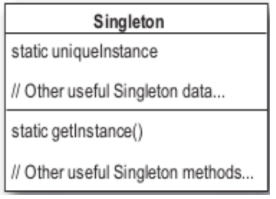

Permite la creación de una sola instancia de una clase. Hay muchos objetos de los cuales necesitamos que exista tan solo uno, por ejemplo, objetos para loguear, objetos que manejan preferencias, drivers, etc. En estos casos el echo de que haya mas de un objeto nos puede llevar a comportamientos incorrectos. Una manera fácil de lograr esto podría ser usando una variable estática para referenciar el objeto. Si bien esto es cierto en java el patrón el singleton nos da un punto de acceso global sin los problemas de una variable global como por ejemplo que hay que iniciarla a iniciar la aplicación, ademas de que no todos los lenguajes de programación soportan variables estáticas.
Entonces como hacemos para que haya un solo objetos de una clase.
Como creamos un objeto:
new MyObjet();
Se puede crear otro objeto de la clase MyObject?
Y si hacemos esto?
public MyClass(){
private MyClass(){}
}
Se puede instanciar una clase asi?
Se podría llamar desde la misma clase pero para esto necesitaría una instancia, y no puedo tener una instancia porque no la puedo instanciar. Sería como que esta primero el huevo o la gallina.
Y si le agregamos un método así se puede llamar?
public MyClass(){
private MyClass(){}
public static MyClass getInstance(){}
}
Se puede porque es un método de clase para lo cual no necesitamos una instancia de la clase para llamarlo. Así sería la invocación:
MyClass.getInstance();
Con esto ya casi tenemos la forma de instanciar el objeto con un constructor privado.
public class Singleton {
private static Singleton uniqueInstance;
private Singleton() {}
public static Singleton getInstance(){
if (uniqueInstance == null) {
uniqueInstance = new Singleton();
}
return uniqueInstance;
}
//resto del codigo
}
private static Singleton uniqueInstance;
Varible estática que guarda una instancia de la clase Singleton.
private Singleton() {}
El constructor se declara privado, solo puede ser accedido por Singleton.
public static Singleton getInstance(){
if (uniqueInstance == null) {
uniqueInstance = new Singleton();
}
return uniqueInstance;
}
getInstance() nos da una forma de instanciar la clase y devuelve la única instancia de Singleton. Solo crea una instancia en el caso de que no haya una guardada en la variable estática y la devuelve.
Vamos a hacer un controlador de una parte del proceso de una fabrica de chocolate. Vamos a controlar un hervidor cuya tarea es llenarse con una mezcla de leche y chocolate y llevarlos a puto de ebullición para recién ahí poder seguir con otra parte del proceso.
El código previene de que se pueda vaciar cuando la mezcla todavía no esta hervida o que se pueda llenar cuando esta lleno.
public class ChocolateBoiler {
private boolean empty;
private boolean boiled;
public ChocolateBoiler() {
empty = true;
boiled = false;
}
public void fill() {
if (isEmpty()) {
empty = false;
boiled = false;
// fill the boiler with a milk/chocolate mixture
}
}
public void drain() {
if (!isEmpty() && isBoiled()) {
// drain the boiled milk and chocolate
empty = true;
}
}
public void boil() {
if (!isEmpty() && !isBoiled()) {
// bring the contents to a boil
boiled = true;
}
}
public boolean isEmpty() {
return empty;
}
public boolean isBoiled() {
return boiled;
}
}
El diseño parece bueno pero nada impida que haya mas de una instancia de la clase ChocoloteBoiler.
Que pasaría se instanciara mas de una instancia de la clase ? Si lo que tratamos de simular es la existencia de un solo ChocolateBoiler entonces deberíamos tener uno solo controlador. Si tenemos mas de una instancia de cada uno tendría su estado aparte y esto no etaria representado la realidad. Así uno podría estar lleno y el otro no y el metodo fill haría que se vuelva a llenar.
Hagamos ChocolateBoiler única usando singleton
ChocolateBoiler
public class ChocolateBoiler {
private boolean empty;
private boolean boiled;
private static ChocolateBoiler uniqueInstance;
private ChocolateBoiler() {
empty = true;
boiled = false;
}
public static ChocolateBoiler getInstance() {
if (uniqueInstance == null) {
System.out.println("Creating unique instance of Chocolate Boiler");
uniqueInstance = new ChocolateBoiler();
}
System.out.println("Returning instance of Chocolate Boiler");
return uniqueInstance;
}
//el resto de los métodos
}
Asegura que una clase tenga una sola instancia de ella y da un punto de acceso global a ella.
Motivación:
Aplicabilidad: Cuando deba haber exactamente una instancia de una clase y ésta debe ser accesible a los clientes desde un punto de acceso conocido.
Participantes:
Consecuencias:
Esctructura:

Hilos
Los hilos o procesos ligeros son una parte de código o miniprograma que puede ser ejecutada independientemente, de forma que una aplicación o un applet puede tener varios hilos ejecutándose simultáneamente y efectuando distintas tareas; estos hilos se encuentran dentro de un programa y son parte de él.
Los hilos, a veces también llamados contextos de ejecución, pueden ser utilizados para la implementación de algoritmos paralelos o procesos concurrentes, sin ser necesario disponer de equipos con estructura de multiprocesador. En el caso de un solo procesador, los procesos ligeros incorporan mecanismos para compartirlo, estableciéndose prioridades entre ellos y también facilidades de sincronización, cuando es necesario.
Dos hilos ejecutando el codigo
public static ChocolateBoiler getInstance() { //hilo1
public static ChocolateBoiler getInstance() { //hilo2
if (uniqueInstance == null) {//hilo1
if (uniqueInstance == null) {//hilo2
uniqueInstance = new ChocolateBoiler();//hilo1
uniqueInstance = new ChocolateBoiler();//hilo2
}
return uniqueInstance;//hilo1
return uniqueInstance;//hilo2
}
//el resto de los métodos
}
Lo que ocurre es que antes de que haya una instancia de la clase cuando tengo que crear el objeto único, puede ocurrir el caso de que distintos hilos creen distintas instancias, una sola de las cuales va a quedar guardada en la variables estática, pero de acuerdo como se ejecuten los hilos pueda devolver distintos objetos.
Si bien parece poco probable esto puedo ocurrir y debemos buscar la forma de evitar esto.
Hacer getInstace() un método syncronized
public class Singleton {
private static Singleton uniqueInstance;
private Singleton() {}
public static syncronized Singleton getInstance(){
if (uniqueInstance == null) {
uniqueInstance = new Singleton();
}
return uniqueInstance;
}
//resto del codigo
}
Agregando el modificador syncronyzed a getInstance(), forzamos a cada hilo a esperar su turno antes de entrar al método.
Esto significa que si un hilo entra al método los demás deben esperar a que termine para poder invocarlo.
El problema de esta implementación es que el uso de syncronized es caro en lo que a performance se refiere.
El problema de que se instancie mas de un objeto de esta clase es la primera vez, pero este método se ejecuta todas las veces que quiero usar el objeto.
Así que una vez que esta instanciado no necesitamos mas que el método sea syncronyzed.
No hacer nada si no es importante el tema de la performance Tener en cuenta que hacer un método syncronyzed puede decrementar la performance en un factor de 100 si hay muchas instanciaciones de getInstance()
Crear tempranamente la instacia en ves de la primera ves que la necesito Si la aplicación siempre usa la instacia de singleton o la creación y costo de tener un objeto que no se usa instanciado no es grande, entoces esta es una alternativa viable.
public class Singleton {
private static Singleton uniqueInstance = new Singleton();
private Singleton() {}
file:///home/pablo/workspace/filminas/MDSingleton/sincleton.md
public static syncronized Singleton getInstance(){
return uniqueInstance;
}
}
Usando esta opción le delegamos a la JVM la creacion de la instacia del objeto. La JVM nos garantiza que cuando la tengamos que usar va a estar disponible. Inclusive la JVM puede que no la cree hasta que la necesitemos, con lo cual termina siendo lo mismo.
Sincronizo después de chequear que no haya una instancia Primer chequeamos para ver si hay una instancia creada y si no hay (acá es donde se puede compĺicar), recién ahí sincronizo.
public class Singleton {
private volatile static Singleton uniqueInstance;
public static Singleton getInstance() {
if (uniqueInstance == null) {
synchronized (Singleton.class) {
if (uniqueInstance == null) {
uniqueInstance = new Singleton();
}
}
}
return uniqueInstance;
}
}
Esta opción esta disponible en las versiones de java a partir de 1.5
Head First Design Patterns http://www.ecured.cu/index.php/Patr%C3%B3n_Singleton